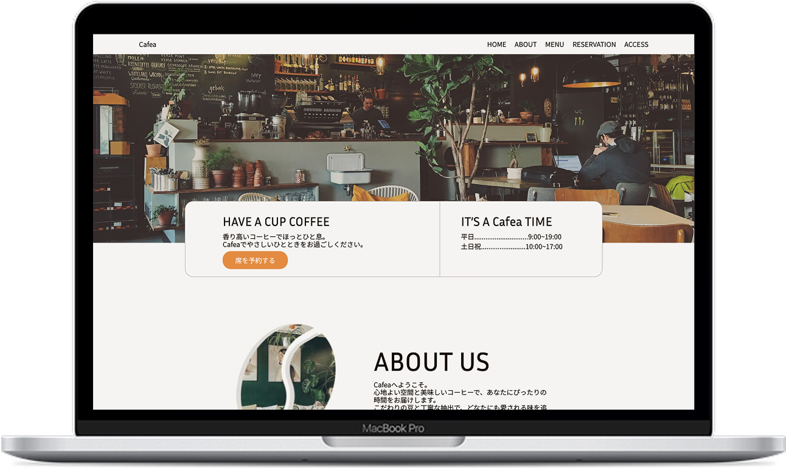

Work
カフェ ホームページ
Coding｜Planning｜Web Design

制作期間：約1週間
使用ツール：Figma / VisualStudioCode
制作概要
Project Overview
架空カフェサイトの制作
デザインはフリー配布のテンプレート（改変可）をベースに一部レイアウトやデザインを調整
ターゲット：落ち着いた雰囲気で気軽に利用できるカフェを探している女性を想定
コンセプト：「落ち着き」「温かみ」「シンプル」
レスポンシブ対応（PC・スマートフォン）
工夫点
Key Points
スマートフォン表示時はページ中央の3枚画像をフェードスライダー化し、画面幅が狭い環境でも視認性を確保
配色はシンプルで落ち着いた印象を保ちつつ、親しみや温かみを感じられるよう意識